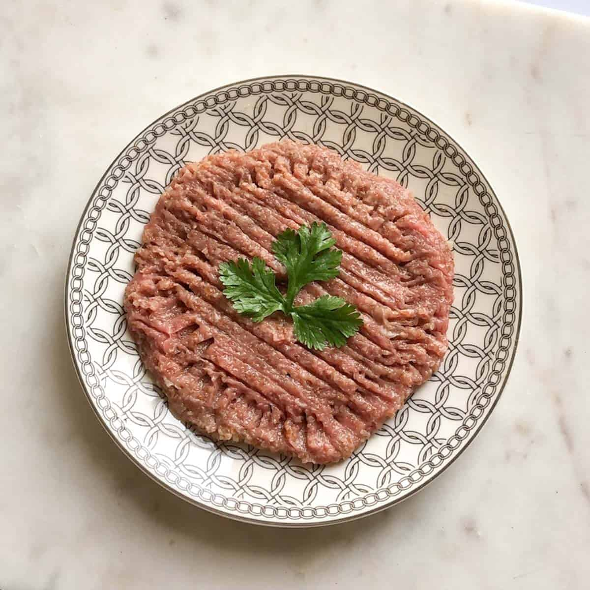

Often compared to steak tartare, this popular Lebanese delicacy incorporates raw lamb or beef, bulgur, finely chopped onions, and various spices such as cinnamon and allspice. Kibbeh nayyeh was traditionally prepared for special occasions when animals were killed, and the meat was minced and served on the same day. Today it is mainly enjoyed as a mezze dish, usually served doused in olive oil and accompanied by mint leaves and pita bread.
Meal prep time : 35 minutes
Servings : 12